JavaScript must be enabled in order to use Notion.
Please enable JavaScript to continue.
跳至內容
專案作品截圖
免費取得 Notion
專案作品截圖
Copila - AI 客製化功能平台
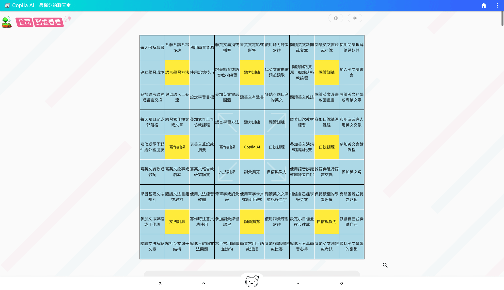
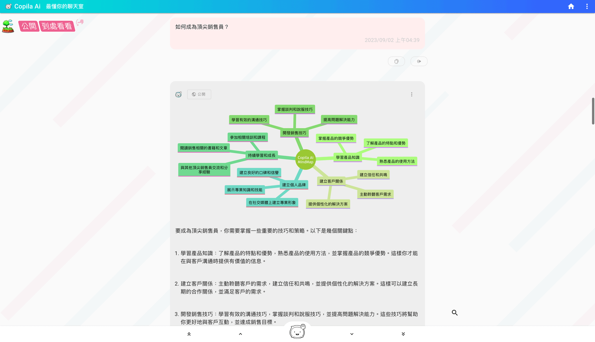
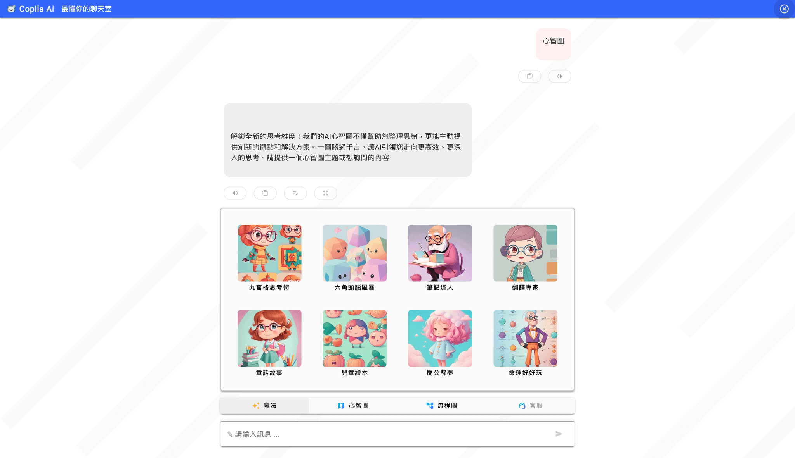
米寶鏢局 - OMO (Online Merge Offline)
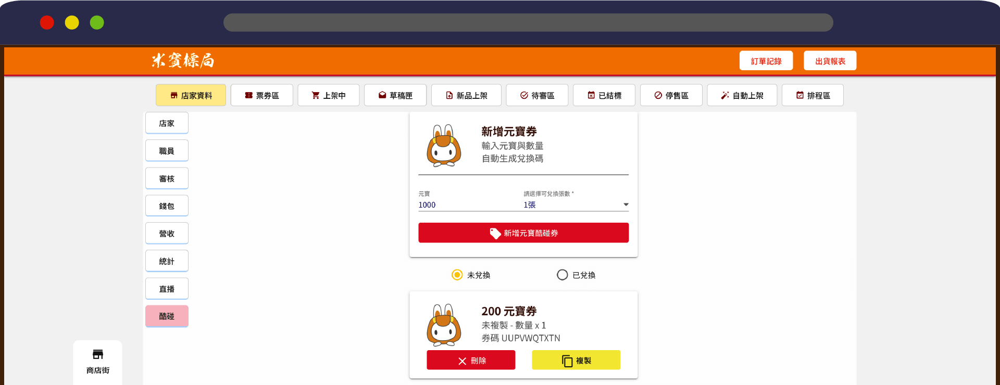
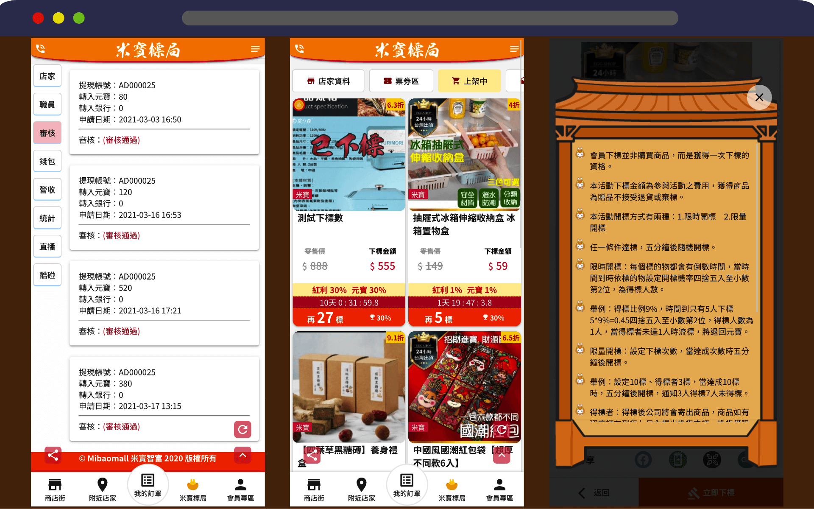
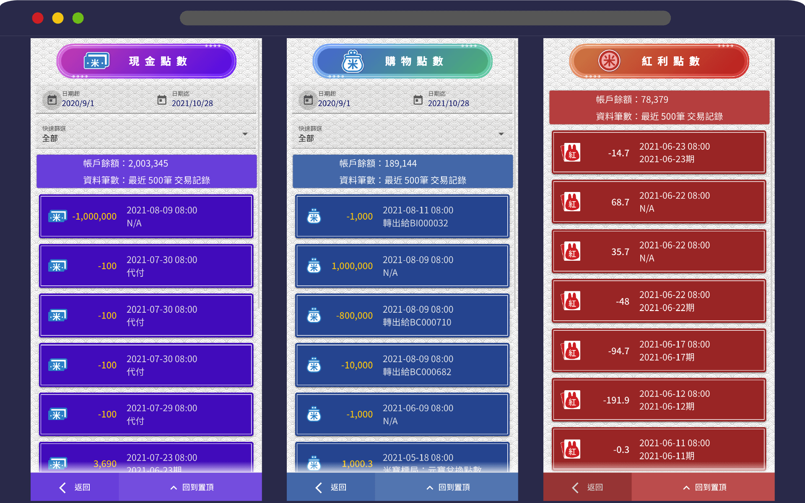
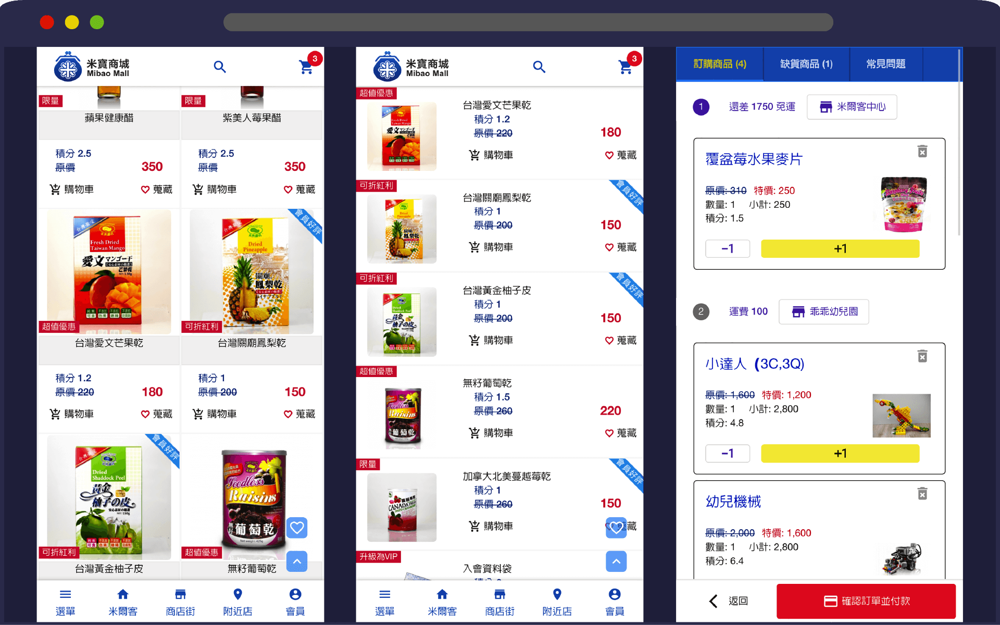
Stocx 股市盤感訓練系統
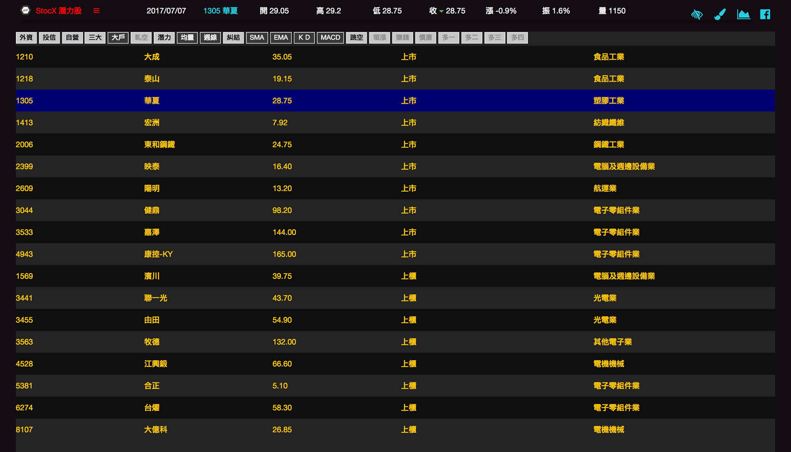
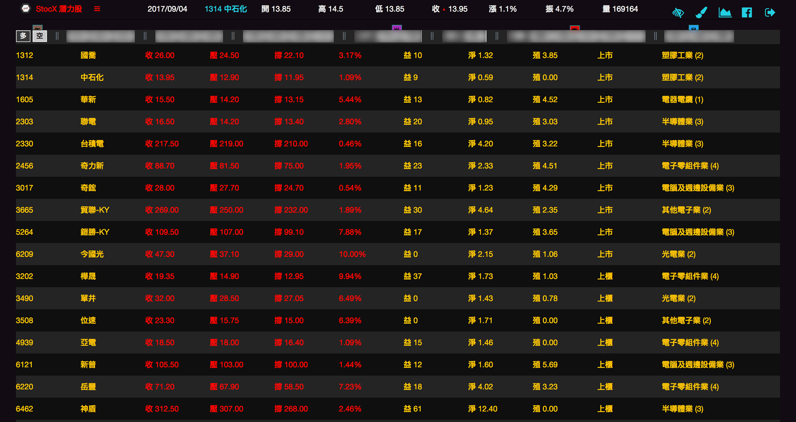
皮紋檢測系統 - 手指皮紋檢測
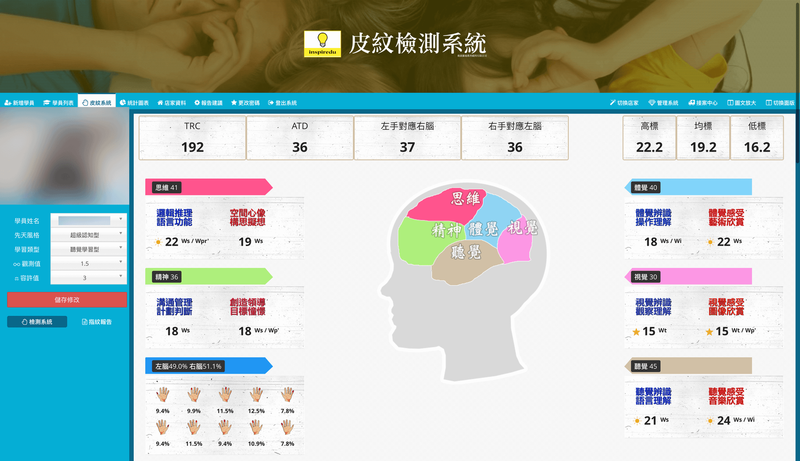
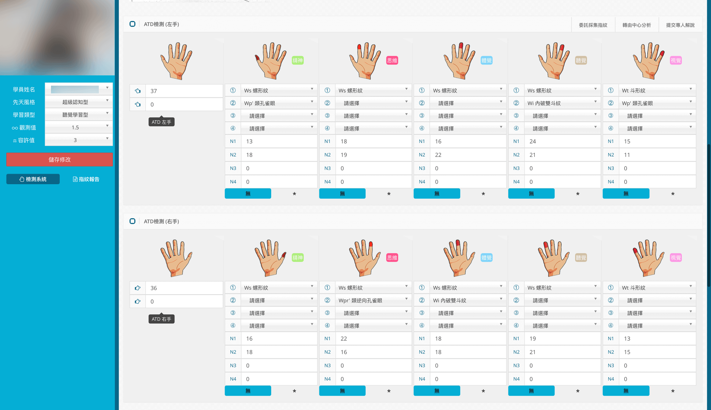
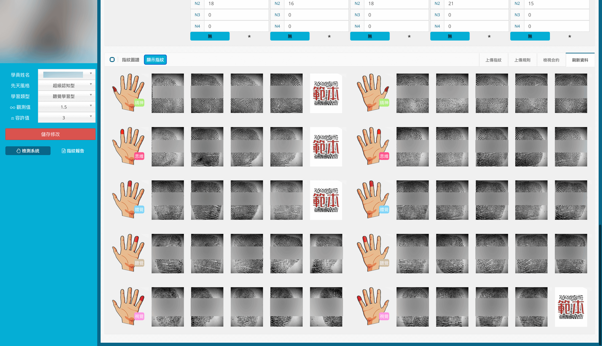
相關連結
中文履歷
English Resume
Project Work Screenshots